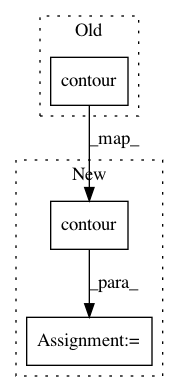

582670eb0b8b0bcd44b5574733b141757452e1fa,astroML/plotting/scatter_contour.py,,scatter_contour,#Any#Any#Any#Any#Any#Any#Any#Any#Any#Any#,5
Before Change
if filled_contour:
ax.contourf(H.T, levels, extent=extent, **contour_args)
else:
ax.contour(H.T, levels, extent=extent, **contour_args)
X = np.hstack([x[:, None], y[:, None]])
if len(outline.allsegs[0]) > 0:
After Change
if filled_contour:
contours = ax.contourf(H.T, levels, extent=extent, **contour_args)
else:
contours = ax.contour(H.T, levels, extent=extent, **contour_args)
X = np.hstack([x[:, None], y[:, None]])
if len(outline.allsegs[0]) > 0:
In pattern: SUPERPATTERN
Frequency: 3
Non-data size: 3
Instances
Project Name: astroML/astroML
Commit Name: 582670eb0b8b0bcd44b5574733b141757452e1fa
Time: 2014-01-30
Author: vanderplas@astro.washington.edu
File Name: astroML/plotting/scatter_contour.py
Class Name:
Method Name: scatter_contour
Project Name: GPflow/GPflow
Commit Name: b32d13a9e3c681028143919f470101cdcad64545
Time: 2020-03-22
Author: art.art.v@gmail.com
File Name: doc/source/notebooks/basics/classification.pct.py
Class Name:
Method Name:
Project Name: markovmodel/PyEMMA
Commit Name: 0ca24325cd6aa9b8d9d0ddb56c8a3a38c06ecc56
Time: 2018-06-20
Author: christoph.wehmeyer@fu-berlin.de
File Name: pyemma/plots/tests/test_plots2d.py
Class Name: TestPlots2d
Method Name: test_contour